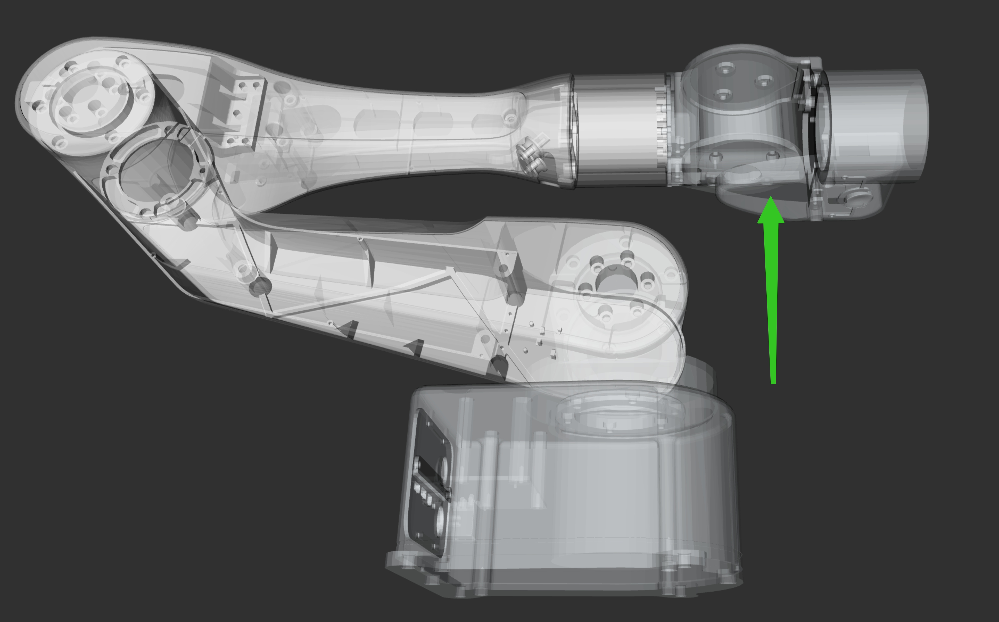
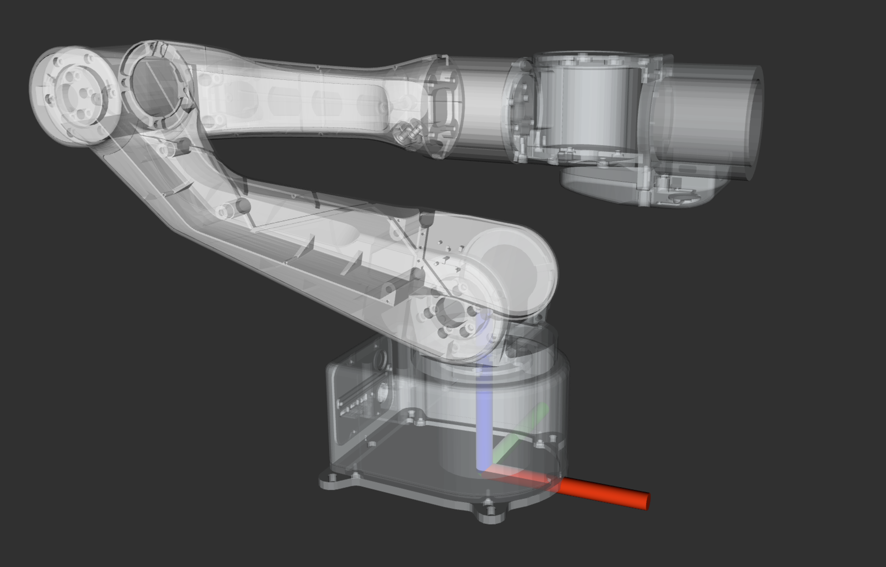
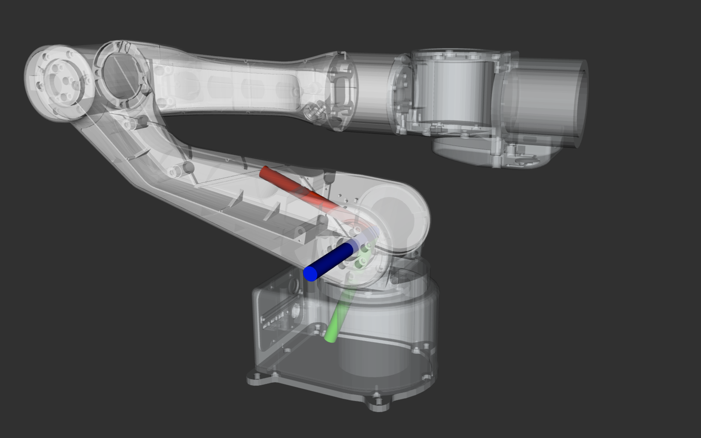
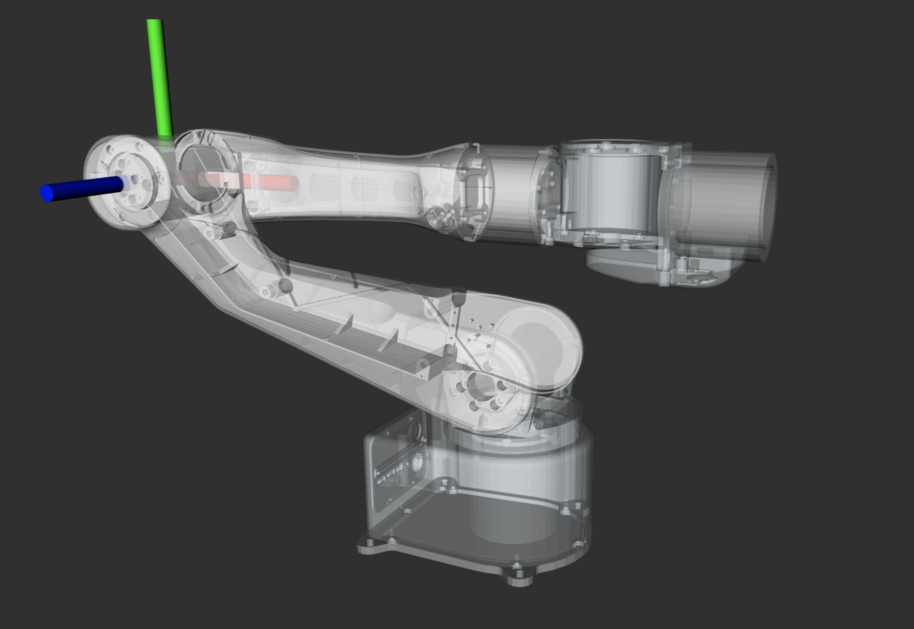
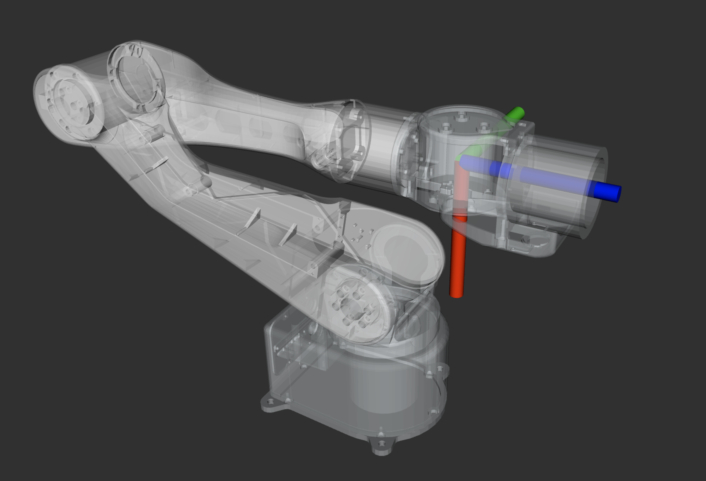
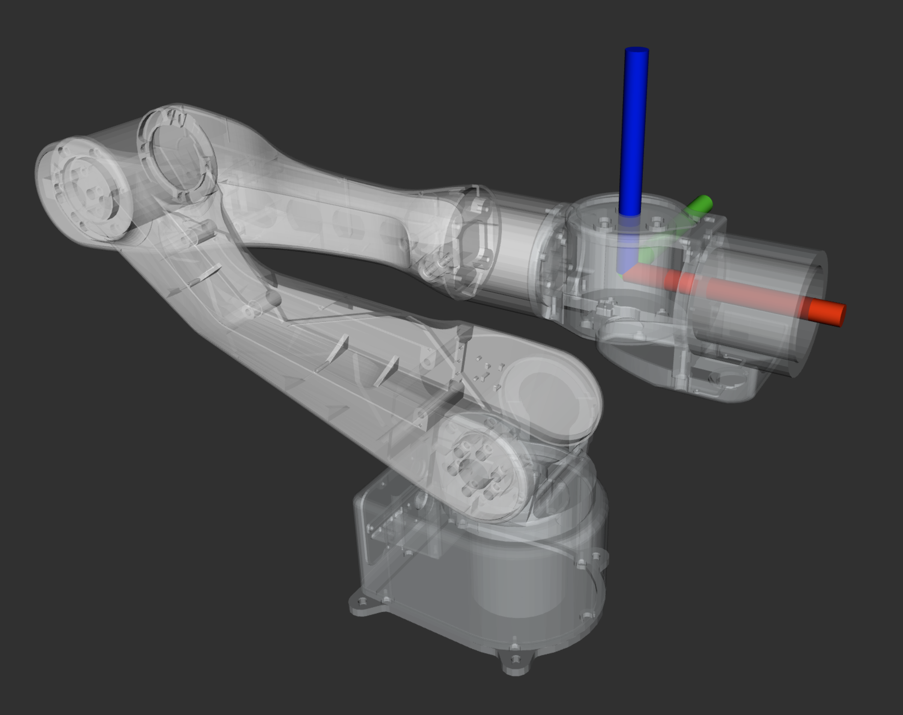
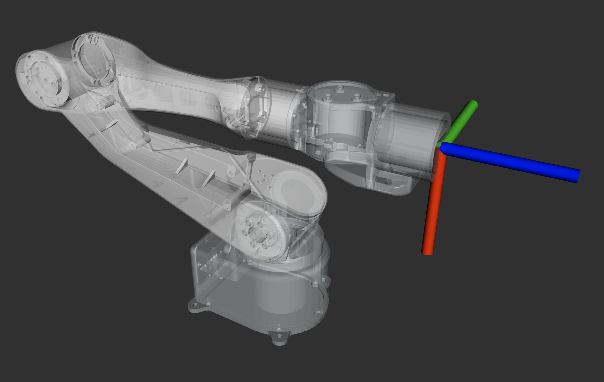

Tool Usage for AIRBOT Play
In this tutorial, we introduce several tools for AIRBOT Play, including:
airbot_set_zero: Zero Position Calibrationairbot_read_params: Read Status and Parametersairbot_kbd_ctrl: Keyboard Controlairbot_sync: Synchronization between two AIRBOT Play armsairbot_demonstrate: Data collection with AIRBOT Playairbot_demonstrate_dual: Data demonstration with two AIRBOT Play arms
1. airbot_set_zero
Calibrate the zero position of the robot. See the tutorial here.
2. airbot_read_params
Read the status and parameters of AIRBOT Play (e.g., firmware version and serial number of boards and motors).
The output will be similar to the following:
# airbot_read_params
# ID Board Type Ver. Serial Number Arm Serial Num. Status Pos(rad) Vel(rad/s) Current(A)
Board#0: Base board V2.8.0 DZ21JH002416058Z PZ25C02401000054 YYYYYY
Board#1: OD motor V2.8.1 DJ25FL012400420E PZ25C02401000054 YYYYYY pos: 0.0000 vel: 0.0000 cur: 0.0000
Board#2: OD motor V2.8.1 DJ25FL012400417I PZ25C02401000054 YYYYYY pos: 0.1745 vel: 0.0000 cur: 0.0000
Board#3: OD motor V2.8.1 DJ25FL012400415G PZ25C02401000054 YYYYYY pos: -0.0873 vel: 0.0000 cur: 0.0000
Board#4: DM motor 3163 ---------------- ---------------- YYYYYY pos: 1.5440 vel: -0.0073 cur: -0.0024
Board#5: DM motor 3163 ---------------- ---------------- YYYYYY pos: -1.4445 vel: -0.0220 cur: -0.0024
Board#6: DM motor 3163 ---------------- ---------------- YYYYYY pos: -0.0010 vel: -0.0220 cur: -0.0024
Board#8: End board V2.7.0 MD20JH002401082G PZ25C02401000054 YYYYYY
Command line options:
-e: specify the end effector attached to the arm. Default:none. Available options:none: No end effector is attachedgripper: AIRBOT Gripper 2 is attachednewteacher: AIRBOT Demonstrator 2 v1 is attachedteacherv2: AIRBOT Demonstrator 2 v2 is attached
-m: specify the can device interface of the arm. Default:can0
Reference:
# airbot_read_params -h
A simple program to read the parameters of the boards on the arm.
Optional arguments:
-h, --help shows help message and exits
-v, --version prints version information and exits
-m, --master Can device interface of the master arm. Default: can0 [nargs=0..1] [default: "can0"]
-e, --master-end-mode The mode of the master arm end effector. Available choices:
"teacher": The demonstrator equipped with Damiao motor
"gripper": The gripper equipped with Damiao motor
"yinshi": The Yinshi two-finger gripper
"newteacher": The demonstrator equipped with self-developed motor
"teacherv2": The V2 version of demonstrator equipped with self-developed motor
"none": The arm is not equipped with end effector. [nargs=0..1] [default: "none"]
--forearm-type The type of forearm. Available choices: "DM": Damiao motor, "OD": Self-developed motors [nargs=0..1] [default: "DM"]
--verbose Display more detailed information about motors
3. airbot_kbd_ctrl
This tool allows you to control the AIRBOT Play arm using the keyboard.
Zero Position Calibration needed
If these situations apply, zero position calibration must be performed before controlling the arm, otherwise the robot may not work as expected or even cause SEVERE DAMAGE:
- This is the first time the robot is powered on
- The joint #1, #2 and #3 are forced to move during power-off despite locked
- The program breaks down during another operation, and the robot is powered off and on again
See the tutorial here for detailed operations.
Firmware Version
All controlling methods require compatible firmware versions. Please make sure firmwares of all boards (base interface boards, motor boards, and end interface boards) are updated to the firmwares provided in the corresponding software package.
The firmware version of the boards can be checked using the airbot_read_params tool.
3.1 CLI options
-e: specify the end effector attached to the arm. Default:none. Available options:none: No end effector is attachedgripper: AIRBOT Gripper 2 is attachednewteacher: AIRBOT Demonstrator 2 v1 is attachedteacherv2: AIRBOT Demonstrator 2 v2 is attached
-m: specify the can device interface of the arm. Default:can0-t: specify the path to a trajectory file. Default:none. If specified, the arm will be able to replay the given trajectory.-d: specify the direction of gravity. This is useful when the arm is not installed on a horizontal surface. Default:down. Available options:down: Gravity direction is downwardleft: Gravity direction is leftwardright: Gravity direction is rightward
3.2 Reference
# airbot_kbd_ctrl -h
Usage: airbot_kbd_ctrl [--help] [--version] --master VAR [--node VAR...] [--master-end-mode VAR] [--trajectory VAR] [--direction VAR] [--urdf VAR] [--master-speed VAR] [--constrained] [--bigarm-type VAR] [--forearm-type VAR]
A simple program to control AIRBOT Play via keyboard.
Optional arguments:
-h, --help shows help message and exits
-v, --version prints version information and exits
-m, --master Can device interface of the master arm. [nargs=0..1] [default: "can0"]
-n, --node Can device interface of the following arm. Can use multiple times (multiple following arms). E.g., -n can1 can2 [nargs: 0 or more] [default: {}]
-e, --master-end-mode The mode of the master arm end effector. Available choices:
"teacher": The demonstrator equipped with Damiao motor
"gripper": The gripper equipped with Damiao motor
"yinshi": The Yinshi two-finger gripper
"newteacher": The demonstrator equipped with self-developed motor
"teacherv2": The V2 version of demonstrator equipped with self-developed motor
"none": The arm is not equipped with end effector. [nargs=0..1] [default: "newteacher"]
-t, --trajectory The trajectory file to replay [nargs=0..1] [default: ""]
-d, --direction The gravity direction. Useful for arms installed vertically [nargs=0..1] [default: "down"]
-u, --urdf Manually provided URDF path to override default paths. [nargs=0..1] [default: ""]
--master-speed The joint speed of the master arm in ratio of PI. [nargs=0..1] [default: 1]
--constrained Stop arm when going out of bounds in gravity compensation mode. False by default
--bigarm-type The type of bigarm. Available choices: "encoder": Self-developed encoders, "OD": Self-developed motors [nargs=0..1] [default: "OD"]
--forearm-type The type of forearm. Available choices: "DM": Damiao motor, "OD": Self-developed motors, "encoder": Self-developed encoders [nargs=0..1] [default: "DM"]
3.3 Keyboard Mappings
After launching airbot_kbd_ctrl, you can control the robot using the keyboard. The following table lists the keyboard mappings for controlling the robot.
3.3.1 Common Keys
| Key | Description |
|---|---|
z or Ctrl + c |
Return to zero position and exit |
` |
return to zero position |
x |
Switch to manual mode |
c |
Switch to online mode |
v |
Switch to offline mode |
b |
Start or stop trajectory recording (in manual mode) |
n |
Start trajectory replay (in offline mode) |
/ |
Try to reset error when in error mode |
Switching Modes via Button
You can also switch modes by pressing the button on the end of AIRBOT Play.  See the states tutorial for more details.
3.3.2 End Effector Pose Control
Base Frame and Tool Frame
We define base frame as the frame fixed on the base of the robot, with x-axis pointing forward, y-axis pointing to the left, and z-axis pointing upward.
We define tool frame as the frame fixed on the end effector of the robot, with x-axis pointing downward, y-axis pointing to the left, and z-axis pointing forward.
By default the control is in the base frame. Press r to switch between controlling in the tool frame or in the base frame.

Moving Step
When controlling via keyboard, the end effector pose is updated by a fixed step on each key press.
By default the translation step is 10cm and the rotation step is pi / 10. Press t to switch between 10cm and 1cm for translation, and pi / 10 and pi / 100 for rotation.
| Key | Description | Key | Description |
|---|---|---|---|
r |
Switch between controlling in the base frame or in the tool frame | t |
Switch moving step between: 10cm and 1cm (for translation) pi / 10 and pi / 100 (for rotation) |
w |
Step forward: Translate endpoint pose by a fixed step along x-axis forward | i |
Spin pitch C.W.: Rotate endpoint pose by a fixed angle along y-axis counter clock-wise |
s |
Step backward: Translate endpoint pose by a fixed step along x-axis backward | k |
Spin pitch C.C.W.: Rotate endpoint pose by a fixed angle along y-axis clock-wise |
a |
Step left: Translate endpoint pose by a fixed step along y-axis leftward | j |
Spin yaw C.W.: Rotate endpoint pose by a fixed angle along z-axis counter clock-wise |
d |
Step right: Translate endpoint pose by a fixed step along y-axis rightward | l |
Spin yaw C.C.W.: Rotate endpoint pose by a fixed angle along z-axis clock-wise |
q |
Step up: Translate endpoint pose by a fixed step along z-axis upward | u |
Spin roll C.W.: Rotate endpoint pose by a fixed angle along x-axis counter clock-wise |
e |
Step down: Translate endpoint pose by a fixed step along z-axis downward | o |
Spin roll C.C.W.: Rotate endpoint pose by a fixed angle along x-axis clock-wise |
3.3.3 Joint Control
Rotation Directions for Joints
When performing joint control, each joints rotates around the z-axis of the joint frame.
The positive direction of rotation is defined as consistent with the right-hand rule, i.e., the thumb points in the positive direction of the z-axis, the fingers curl in the positive direction of rotation.
The following images show the positive direction of rotation for joint #1 to joint #6.
     
| Key | Description | Key | Description |
|---|---|---|---|
1 |
Rotate a fixed step along positive direction of joint #1 | 2 |
Rotate a fixed step along negative direction of joint #1 |
3 |
Rotate a fixed step along positive direction of joint #2 | 4 |
Rotate a fixed step along negative direction of joint #2 |
5 |
Rotate a fixed step along positive direction of joint #3 | 6 |
Rotate a fixed step along negative direction of joint #3 |
7 |
Rotate a fixed step along positive direction of joint #4 | 8 |
Rotate a fixed step along negative direction of joint #4 |
9 |
Rotate a fixed step along positive direction of joint #5 | 0 |
Rotate a fixed step along negative direction of joint #5 |
- |
Rotate a fixed step along positive direction of joint #6 | = |
Rotate a fixed step along negative direction of joint #6 |
3.3.4 End effector Control
When an end effector (e.g., AIRBOT Gripper 2) is attached to AIRBOT Play, you can control the gripper using the following keys:
| Key | Description |
|---|---|
[ |
Close the gripper |
] |
Open the gripper |
CLI Arguments Needed when Launching with End Effector
In order to control the end effector, you need to specify the end effector type when launching the tool. For example, to control the AIRBOT Gripper 2, you need to specify -e gripper.
4. airbot_sync
This tool allows you to performing tele-operation of two AIRBOT Play arms by synchronizing their movements.
Zero Position Calibration needed
If these situations apply, zero position calibration must be performed before controlling the arm, otherwise the robot may not work as expected or even cause SEVERE DAMAGE:
- This is the first time the robot is powered on
- The joint #1, #2 and #3 are forced to move during power-off despite locked
- The program breaks down during another operation, and the robot is powered off and on again
See the tutorial here for detailed operations.
Firmware Version
All controlling methods require compatible firmware versions. Please make sure firmwares of all boards (base interface boards, motor boards, and end interface boards) are updated to the firmwares provided in the corresponding software package.
The firmware version of the boards can be checked using the airbot_read_params tool.
4.1 CLI options
-m: specify the can device interface of the leader arm. Default:can0-n: specify the can device interface of the follower arm. Default:can1-d: specify the gravity direction for the leader arm. Default:down. Available options:down: Gravity direction is downwardleft: Gravity direction is leftwardright: Gravity direction is rightward
--leader-end-mode: specify the end effector attached to the leader arm. Default:newteacher. Refer to end effector doc for further information. Available options:none: No end effector is attachedgripper: AIRBOT Gripper 2 is attachednewteacher: AIRBOT Demonstrator 2 v1 is attachedteacherv2: AIRBOT Demonstrator 2 v2 is attached
--follower-end-mode: specify the end effector attached to the follower arm. Default:gripper. Available options:none: No end effector is attachedgripper: AIRBOT Gripper 2 is attachednewteacher: AIRBOT Demonstrator 2 v1 is attachedteacherv2: AIRBOT Demonstrator 2 v2 is attached
--mit: specify the control mode of the follower arm. With--mit, the joints of the follower arm will be controlled via MIT mode (Force/Torque control)
4.2 Reference
# airbot_sync -h
Usage: airbot_sync [--help] [--version] [--urdf VAR] --leader VAR --follower VAR [--direction VAR] [--leader-end-mode VAR] [--follower-end-mode VAR] [--leader-speed VAR] [--follower-speed VAR] [--leader-forearm-type VAR] [--follower-forearm-type VAR] [--leader-bigarm-type VAR] [--follower-bigarm-type VAR] [--mit]
Optional arguments:
-h, --help shows help message and exits
-v, --version prints version information and exits
-u, --urdf Manually provided URDF path to override default paths. [nargs=0..1] [default: ""]
-m, --leader Can device interface of the master arm. [nargs=0..1] [default: "can0"]
-n, --follower Can device interface of the following arm. [nargs=0..1] [default: "can1"]
-d, --direction The gravity direction. Useful for arms installed vertically [nargs=0..1] [default: "down"]
--leader-end-mode The mode of the master arm end effector. Available choices:
"teacher": The demonstrator equipped with Damiao motor
"gripper": The gripper equipped with Damiao motor
"yinshi": The Yinshi two-finger gripper
"newteacher": The demonstrator equipped with self-developed motor
"teacherv2": The V2 version of demonstrator equipped with self-developed motor
"none": The arm is not equipped with end effector. [nargs=0..1] [default: "newteacher"]
--follower-end-mode The mode of the master arm end effector. Available choices:
"teacher": The demonstrator equipped with Damiao motor
"gripper": The gripper equipped with Damiao motor
"yinshi": The Yinshi two-finger gripper
"newteacher": The demonstrator equipped with self-developed motor
"teacherv2": The V2 version of demonstrator equipped with self-developed motor
"none": The arm is not equipped with end effector. [nargs=0..1] [default: "gripper"]
--leader-speed The joint speed of the master arm in percentage of PI. [nargs=0..1] [default: 3.14159]
--follower-speed The joint speed of the follower arm in percentage of PI. [nargs=0..1] [default: 9.42478]
--leader-forearm-type The type of forearm of leader. Available choices: "DM": Damiao motor, "OD": Self-developed motors, "encoder": Self-developed encoders. [nargs=0..1] [default: "DM"]
--follower-forearm-type The type of forearm of follower. Available choices: "DM": Damiao motor, "OD": Self-developed motors "encoder": Self-developed encoders. [nargs=0..1] [default: "DM"]
--leader-bigarm-type The type of bigarm of leader. Available choices: "OD": Self-developed motors, "encoder": Self-developed encoders. [nargs=0..1] [default: "OD"]
--follower-bigarm-type The type of bigarm of follower. Available choices: "OD": Self-developed motors "encoder": Self-developed encoders. [nargs=0..1] [default: "OD"]
--mit Enable force feedback control.
4.3 Keyboard Mappings
After launching airbot_sync, you can control the leader arm using the keyboard. The following table lists the keyboard mappings for controlling the follower arm.
| Key | Description |
|---|---|
z or Ctrl + c |
Return to zero position and exit |
` |
return to zero position |
x |
Switch leader arm to manual mode |
c |
Switch leader arm to online mode |
v |
Switch leader arm to offline mode |
b |
Start or stop trajectory recording (in manual mode) |
n |
Start trajectory replay (in offline mode) |
/ |
Try to reset error when in error mode |
Switching Modes via Button
You can also switch modes by pressing the button on the end of AIRBOT Play. See the states tutorial for more details.
5. airbot_demonstrate
TBD
6. airbot_demonstrate_dual
TBD